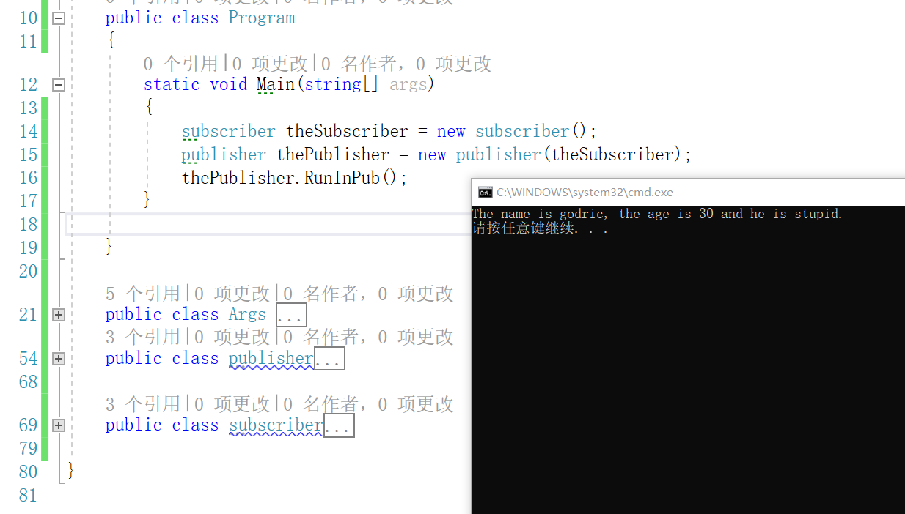

委托
可以认为委托是拥有一个或多个方法的对象，这里的对象和面向对象编程中的对象略有区别，正常情况下是不能“执行”一个对象，但是委托与典型的对象不同。可以“执行”委托，此时委托会“执行”它包含的所有方法。
声明委托
声明委托就像是在头文件中声明一个函数头，只不过需要在返回类型前面加上关键词”delegate”
1 | delegate void MyDel(int a, int b); |
上面就是声明了一个委托类型MyDel,该委托类型需要传入两个整型参数a、b，并且会返回void，第二行代码创建了myDelegate实例。
接下来做一个简单演示，定义一个委托和一个myClass类，其中包含sumTwoNum方法，将该方法赋给委托，通过委托来进行计算两个数的和；
1 | using System; |
上面的代码中，定义了一个myClass类，其中包含两个私有整型变量num1、num2,及一个sunTwoNum的求和方法；
将myDelegate实例化，并且将m1.sumTwoNum赋给myDelegate委托，这样执行myDelegate()后，就可在控制台输出1+2的结果。
1 | myDelegate += class.method2; |
上面的代码展示了给myDelegate增加更多的实例方法，通过”+=”赋值，也可以将静态方法赋给委托对象，这样在执行委托时，就会执行其中“拥有”的全部方法。
事件
程序运行时常常会有这样的需求，就是在某个特定事件发生时，程序的其他部分可以得到该事件已经发生的通知，事件就可以满足这种需求。
发布者类定义了一些程序其他类可能感兴趣的事件，其他类就可以注册这些事件，当发布者类的定义事件发生时，已经注册的类就可以获得通知，事件触发后执行的方法称为回调方法，也可以称为事件处理程序。
为什么要将委托和事件一起来介绍，就是因为事件就像是专门用于特殊途径的简单委托。
通过事件传递参数的例子
这个例子中包含一个Args类，该类是用来保存需要从发布者传递到订阅者的信息；当然还需要一个publisher类，publisher中有RunInPub方法，从方法名中就可以看出，这个方法是在publisher的实例中的方法，当publisher的实例运行该方法，就会将Args类的实例信息发送出去；最后还需要一个subscriber类，subscriber类中包含EventForPublisher方法，从该方法的名字可以看出，这个方法是订阅者subscriber在publisher注册的方法。
以下为Args类的定义
1 | public class Args : EventArgs |
可以看出Args类是继承于EventArgs类，EventArgs类是专门用来在事件的发布者与订阅者之间传递参数的类，Args类中包含三个字段name、age和isStupid，为了数据安全，三个字段均设为private；一个Args的构造函数，用于初始化Args的实例；一个boolToString方法，用于将bool类型isStupid转化为字符串类型；一个GetArgs()函数，返回包含私有字段的字符转数组。
1 | public class publisher |
以上为publisher类，该类中通过：
1 | public event EventHandler<Args> Event; |
语句，声明了Event事件，该事件是通过泛型委托EventHandler
1 | public class subscriber |
以上为subscriber类，该类中只包含有一个EventForPublisher方法，从名字也可以看出，这个方法就是subscriber的实例注册到事件Event中的方法，该方法执行后，会将args传来的数组中的信息显示出来。
以上的代码组合起来，就实现了从publisher类中将godricArgs信息传递出去，并且传递的方法是在subscriber中定义的。

最后，我努力来打个比方，事件的发布和订阅就好比是，发布者好比是西餐厅，订阅者就好比顾客，西餐厅可以提供各种服务，但是具体是什么服务，需要顾客来”订阅(this.Event += sub.EventForPublisher)”，比如顾客说要一份牛排并且三分熟(void EventForPublisher(object o, Args args))，餐厅就会按要求(void EventForPublisher(object o, Args args))把牛排做好(执行Event(this, godricArgs))，我现在也就只能理解到这个程度了，以后如果有新的想法，在添加吧。